«Поэзия русской дачи»
Загородный дом
Весь дом выстроен вокруг антикварной чугунной печи-буржуйки. Интерьер стал победителем трёх международных конкурсов, в том числе Interia Awards 2016.
«Мне хотелось, чтобы в доме была атмосфера дачи. Ведь дача – это образ жизни, воспетый в русской литературе, уголок летней безмятежности… чаепитий с вареньями и букетами полевых цветов.»
Светлана Ильина
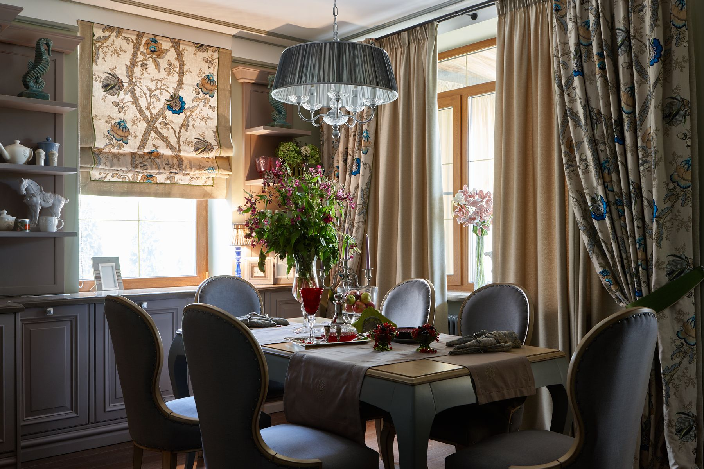
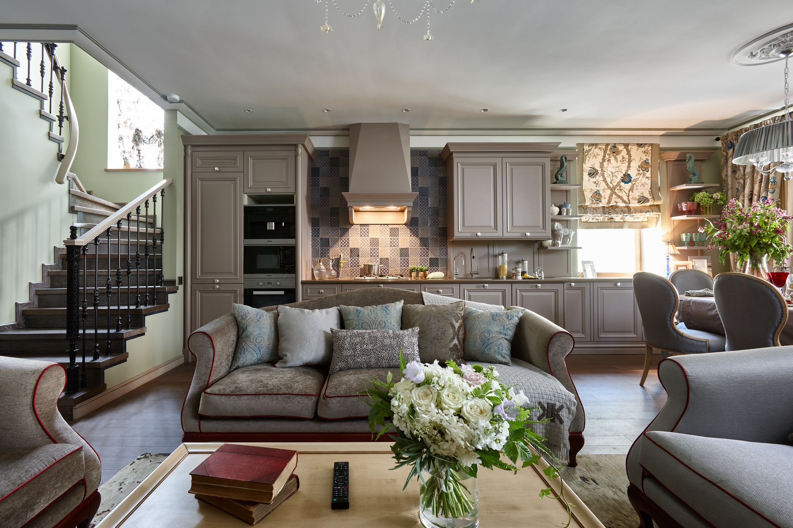
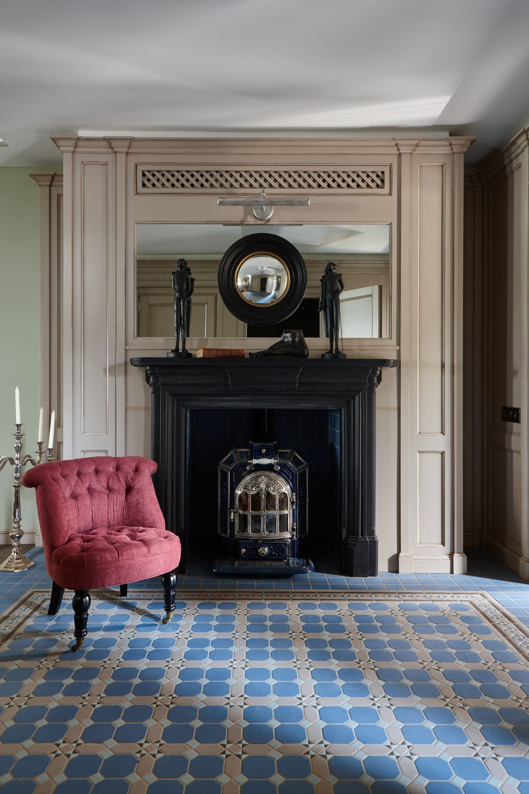
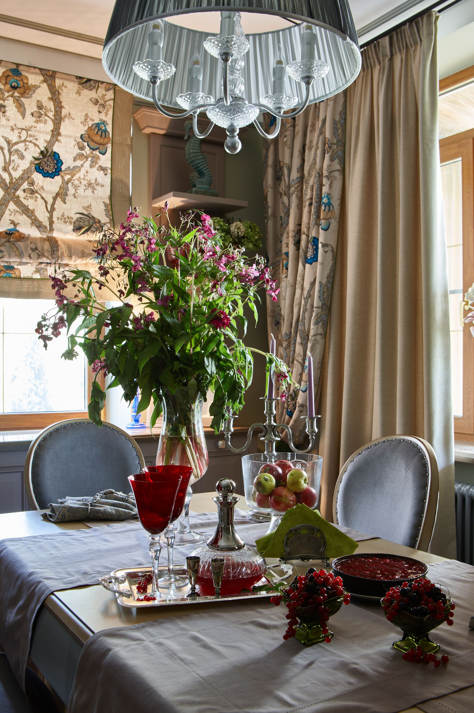
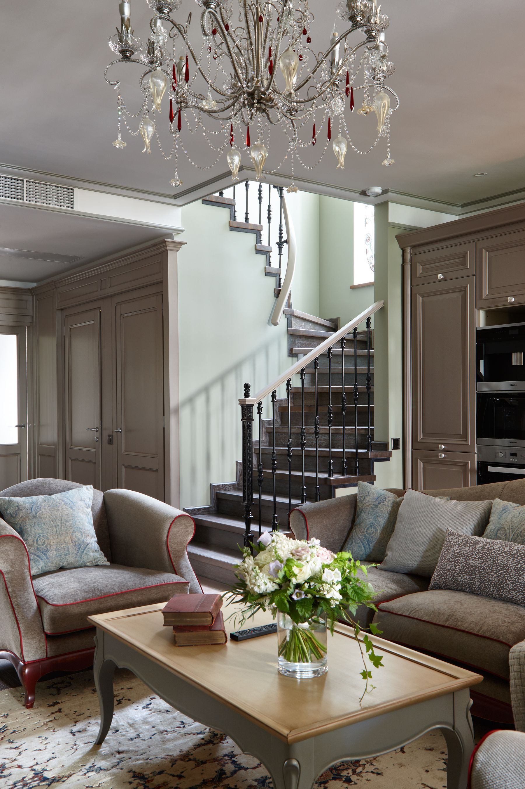
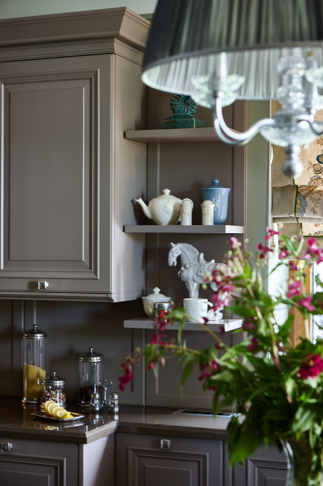
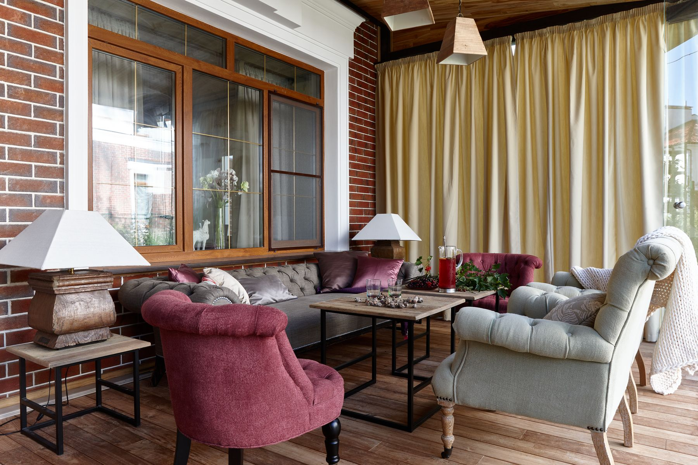
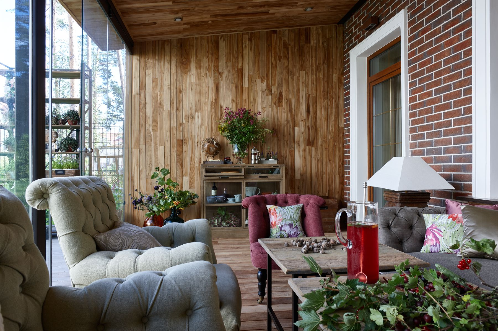
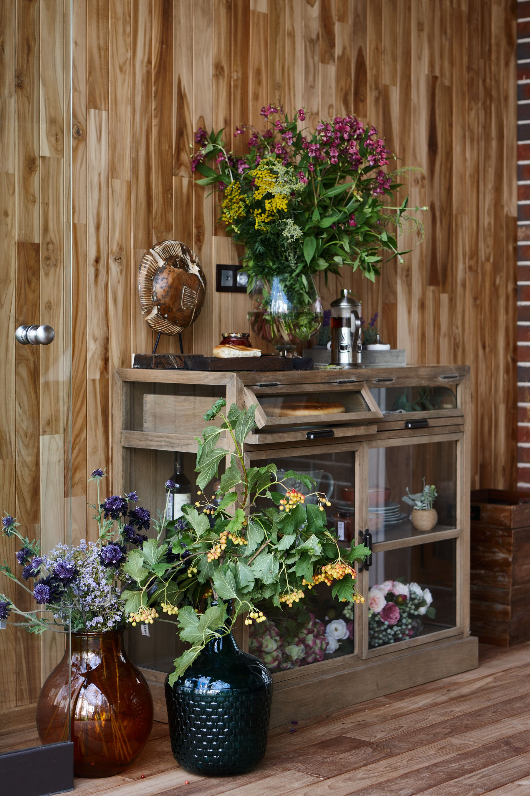
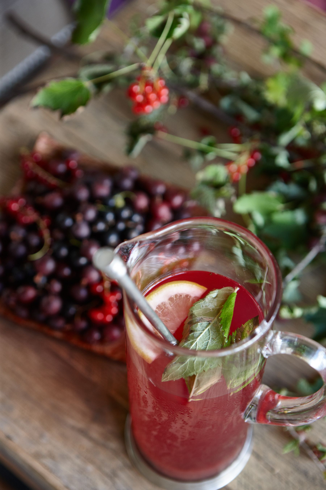
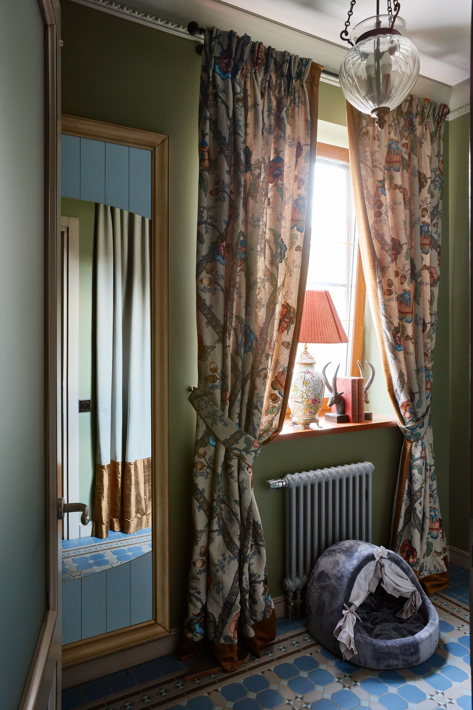
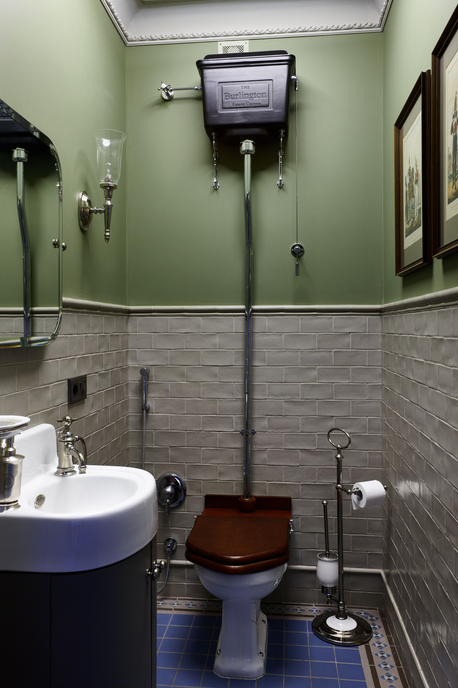
Расскажите о своём доме
Позвоните или напишите в Телеграм. Сразу пригодятся адрес, площадь и что нужно сделать. Дальше – встреча на объекте.